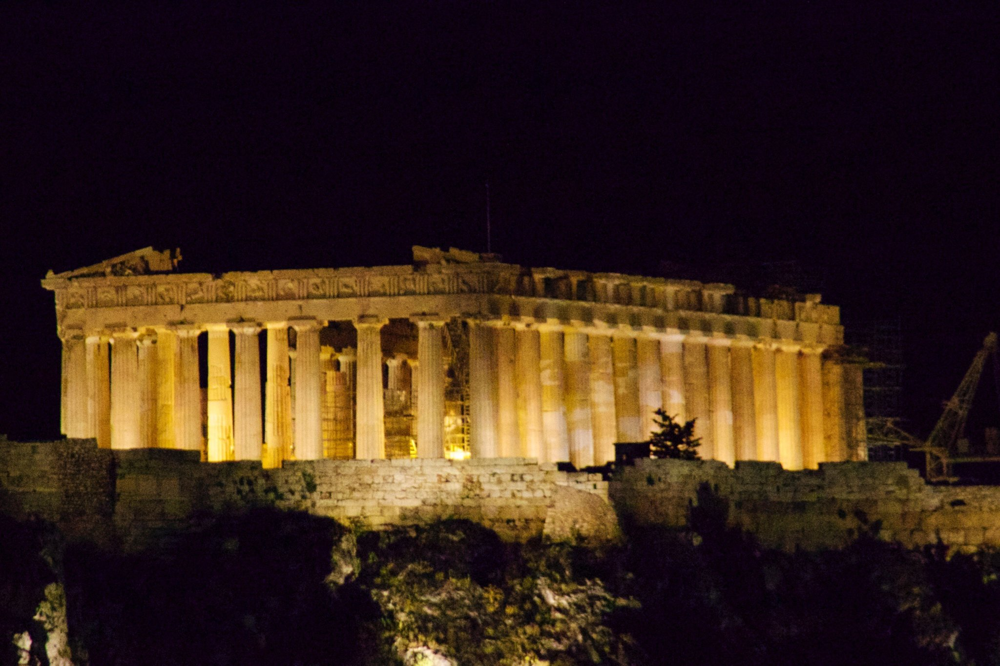
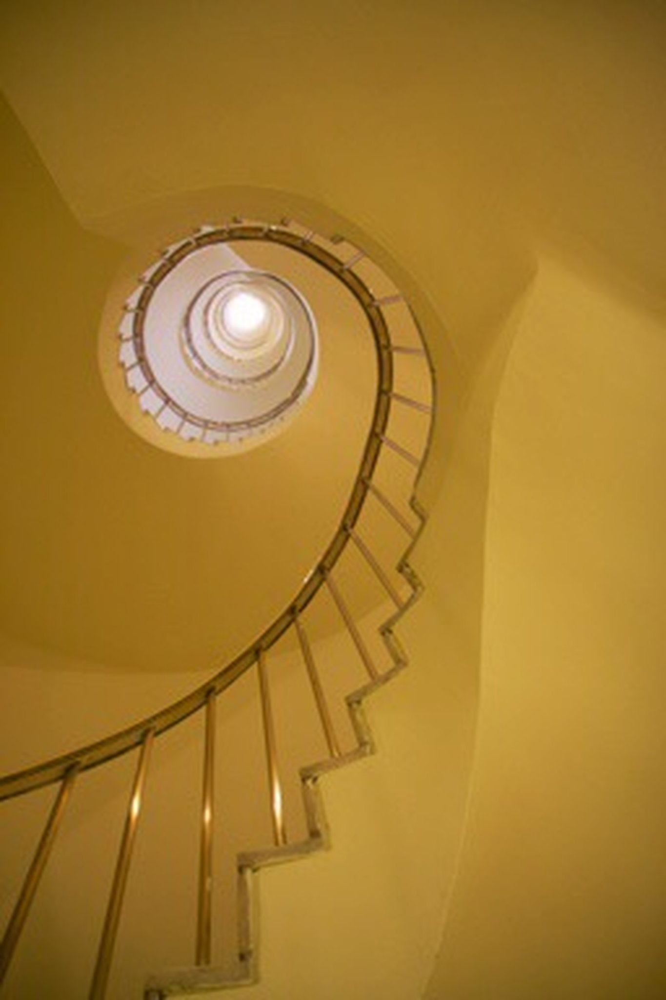

Mark Elster
Historic Reflections 11, 12
The itinerary, day 11 & 12
Soon we settled in for a late lunch at a sidewalk pub, drinking in a brew and the scene, basking in the sun with some baclava.


Athens


Moving on

NancyEllen has a boundless interest in window shopping and might’ve been content to idle much of the remaining day weaving through the densely packed shops (seemingly a quarter of them filled with ubiquitous ceramic phalluses). But like a little kid, Mark persistently tugged at her arm, repeatedly pointing out the Acropolis fleetingly glimpsed through gaps in the streetscape. After a pledge to return peacefully to window shopping later, we turned our attention to that dominant and very consequential hill.

Athens and the Acropolis


Our morning begins with sun streaming in the window and a hot breeze carrying blaring Armenian folk music and a highly amplified raucous tirade (it was literally all Greek to us) —clearly a political rant. We dashed through breakfast to see the beginning of the Marxist style parade and get ahead of it if things turned nasty. It didn’t take long to see that our guide had been right, the crowds are loud but orderly and peaceful.
As in America, there is a lot of sound and fury but little substance. Only more so. Hordes of ginned up AstroTurf protesters have been bussed in, outfitted with coordinated uniforms and provided with expensive professionally printed signs and banners, as if produced by Hollywood. They are marched in procession by a viewing stand manned by pandering politicians and union apparatchiks all right on schedule in a choreographed spectacle for the cameras and reporters. All so predictably unproductive and pointlessly disruptive—going through the motions, because this is the scripted way you demand that someone somewhere should be forced to give you more.
As in America, there is a lot of sound and fury but little substance. Only more so. Hordes of ginned up AstroTurf protesters have been bussed in, outfitted with coordinated uniforms and provided with expensive professionally printed signs and banners, as if produced by Hollywood. They are marched in procession by a viewing stand manned by pandering politicians and union apparatchiks all right on schedule in a choreographed spectacle for the cameras and reporters. All so predictably unproductive and pointlessly disruptive—going through the motions, because this is the scripted way you demand that someone somewhere should be forced to give you more.

Athens, at last.
Leaving our parents and sons and the Riviera, our home for the last 11 days, we hop on a coach to Athens, a 4,000 year old city and metropolitan area, crammed with nearly five million people—just about half the population of Greece.
Our guide, Deena, draws our attention to the few antiquity sites visible, including tantalizing glimpses of the Acropolis and Parthenon, which really does command the whole city. She also took time to prepare us for our encounters with the people. She is worried we will be frightened or offended by the coming protests. It is May 1st, May Day, and in this country with persistent communist leanings, today and tomorrow will be dominated by planned peaceful protests. She tells us, "The locals will warmly greet you, ask how old you are, how much you earn, how much you weigh, and if they learn you are not married, will want to marry you off to a cousin or other person they know," and warns, "Greeks like to shout and carry big colorful banners, but they are not scary, they are mild mannered."
Sure enough, traffic is snarled due to a general strike and various protests we don’t see that have closed roads and diverted traffic. The main boulevard we creep along (at one point we didn’t move an inch for thirty minutes) was due to be shut down shortly after we pass, so it is lucky we made it to the hotel situated across the plaza from the Parliament building where tomorrow’s parade, rally, and protest is to be staged.
As we pass slowly through downtown, flashes of the distant ruins are juxtaposed with modern ones. We were appalled at how shabby Athens is. Like Marseille, the place exudes a resigned despair. Buildings are boarded up, with ubiquitous signs of squatters on every block, stray cats and dogs litter the streets, vagrants overrun the parks, militant graffiti is everywhere and even the occupied buildings display various states of disrepair.
Traffic is more congested than anywhere we’ve ever seen, and seemingly chaotic. But having time to observe, we began to see an order to it and unspoken rules of engagement: park wherever your vehicle will fit; drive wherever your vehicle will fit (this explains the hordes of scooters and small motorbikes); go as fast as you can and honk often; lanes are for losers, traffic signals are for bigger losers; and pedestrians better stay out of the way! The thing is, it all works rather well, and I came away envious.
Finally we round a bend past the remains of the Temple to Jupiter (beautiful), and the National Gardens (sprawling), and pull up in front of the Athens Plaza Hotel where we will be staying. Fortunately, in contrast to where we’d just passed, the hotel and the park it overlooks is well cared for.
Leaving our parents and sons and the Riviera, our home for the last 11 days, we hop on a coach to Athens, a 4,000 year old city and metropolitan area, crammed with nearly five million people—just about half the population of Greece.
Our guide, Deena, draws our attention to the few antiquity sites visible, including tantalizing glimpses of the Acropolis and Parthenon, which really does command the whole city. She also took time to prepare us for our encounters with the people. She is worried we will be frightened or offended by the coming protests. It is May 1st, May Day, and in this country with persistent communist leanings, today and tomorrow will be dominated by planned peaceful protests. She tells us, "The locals will warmly greet you, ask how old you are, how much you earn, how much you weigh, and if they learn you are not married, will want to marry you off to a cousin or other person they know," and warns, "Greeks like to shout and carry big colorful banners, but they are not scary, they are mild mannered."
Sure enough, traffic is snarled due to a general strike and various protests we don’t see that have closed roads and diverted traffic. The main boulevard we creep along (at one point we didn’t move an inch for thirty minutes) was due to be shut down shortly after we pass, so it is lucky we made it to the hotel situated across the plaza from the Parliament building where tomorrow’s parade, rally, and protest is to be staged.
As we pass slowly through downtown, flashes of the distant ruins are juxtaposed with modern ones. We were appalled at how shabby Athens is. Like Marseille, the place exudes a resigned despair. Buildings are boarded up, with ubiquitous signs of squatters on every block, stray cats and dogs litter the streets, vagrants overrun the parks, militant graffiti is everywhere and even the occupied buildings display various states of disrepair.
Traffic is more congested than anywhere we’ve ever seen, and seemingly chaotic. But having time to observe, we began to see an order to it and unspoken rules of engagement: park wherever your vehicle will fit; drive wherever your vehicle will fit (this explains the hordes of scooters and small motorbikes); go as fast as you can and honk often; lanes are for losers, traffic signals are for bigger losers; and pedestrians better stay out of the way! The thing is, it all works rather well, and I came away envious.
Finally we round a bend past the remains of the Temple to Jupiter (beautiful), and the National Gardens (sprawling), and pull up in front of the Athens Plaza Hotel where we will be staying. Fortunately, in contrast to where we’d just passed, the hotel and the park it overlooks is well cared for.
Fortunately the 'protesters' weren’t able to shut down everything. In fact, right behind them, the picturesque Ezvones guards proceeded with their daily ritual, unperturbed. The Changing of Guards of the unknown soldier takes place each morning in a colorful display we were only able to glimpse the day before. Because of the protests the parliamentary platia was locked off to visitors, resulting in a better view with the crowds held at bay.
The hotel is mid–rise, like most of the buildings in town (regulated to prevent overshadowing the dominance of the Acropolis) and of 1970s vintage, nice but unremarkable. The location is excellent—across the street from the Πλατεία Συντάγματο, pronunciation: [plaˈtia sinˈdaɣmatos], also known as Syntagma Square, or in English, Constitution Square and kitty corner from the old Parliament building—central to all the sites we will want to visit on foot. Our guide has assured us that the tourist district is fully open for business, noting, "No strikes where markets and capitalism still prevail," and points out that the square has been strung with wire and a PA system for tomorrow’s events.

The Evzones wear a highly stylized And utterly impractical military uniform commemorating disparate episodes of Greek military and cultural history. The Foustanella (the skirt they are wearing) has 400 pleats, signifying the 400 years of slavery endured under the Ottoman Turks (under the religion of peace no less), that ended with the revolution of 25 March 1821. The origins of the pompons on their tsarouhi shoes are obscured by time, dating back as far as Byzantine times, although,according to Wikipedia, there is some speculation they offered an additional measure of waterproofing—and then things must have gotten out of hand fashion–peacock wise.
The result all these centuries later is the entertaining pageantry of the changing of these guards and their highly stylized synchronized movements. One can’t help visualizing the "Ministry of Silly Walks" skit from Monty Python.
The result all these centuries later is the entertaining pageantry of the changing of these guards and their highly stylized synchronized movements. One can’t help visualizing the "Ministry of Silly Walks" skit from Monty Python.

After a delay in registering, we strolled past the park into the fashion district where an entranced NancyEllen salivated at four successive vibrant blocks of ritzy shoe stores! while Mark thanked the Greek gods that they were all closed! Besides, the Pláka, a historical neighbourhood clustered upon the flanks of the Acropolis, was our immediate goal. Its labyrinthine streets and neoclassical architecture house a plethora of shops and restaurants that were all open and humming with activity.
Idling in shop after shop we finally found a Grecian vase that now stands on display on a shelf at home. The shopkeeper spoke decent English so NancyEllen inquired about the "splatters," as she calls them; the persistent and ubiquitous street hustlers that endlessly throw a little rubbery toy at a mat (where upon it splats flat and then quickly reconstitutes its original form) over and over again (and again). These "gentlemen" are everywhere we’ve been on the trip, all carrying the same stock and utilizing the same listless "sales" technique as if they were some kind of diabolical franchisees. The shopkeeper explained that these men were all from Bangladesh where 1€ is equal to 10 days labor at home. So even though they don’t sell much, by living together in crowded hovels (or on the street) they save what little they scratch together and send it home. The shopkeepers wish they would go away, because they annoy the tourists and residents with their worthless junk, plus their activity is outlawed (they hi-tail it away at first sight of the gendarmes).
Idling in shop after shop we finally found a Grecian vase that now stands on display on a shelf at home. The shopkeeper spoke decent English so NancyEllen inquired about the "splatters," as she calls them; the persistent and ubiquitous street hustlers that endlessly throw a little rubbery toy at a mat (where upon it splats flat and then quickly reconstitutes its original form) over and over again (and again). These "gentlemen" are everywhere we’ve been on the trip, all carrying the same stock and utilizing the same listless "sales" technique as if they were some kind of diabolical franchisees. The shopkeeper explained that these men were all from Bangladesh where 1€ is equal to 10 days labor at home. So even though they don’t sell much, by living together in crowded hovels (or on the street) they save what little they scratch together and send it home. The shopkeepers wish they would go away, because they annoy the tourists and residents with their worthless junk, plus their activity is outlawed (they hi-tail it away at first sight of the gendarmes).


On our own, tour, lunch, cats dogs, Sisifous dinner, cocktails looking at Acropolis
We’re glad we opted for the full guided tour of the Acropolis museum and the Acropolis itself—there was way too much to cover on our own in less than a day. The museum is worthy of a full day alone and quite a beautiful modern structure, nearly complete at the time of our visit. It is situated at the foot of the Acropolis on top of an archeological dig site (they’re literally all over Athens), highlighted by the glass floored approach walk to the main entry Pavilion.
Arranged to present the people’s and events that culminated in classical Greece, represented by artifacts and detailed scale models, the museum does a great job, but our guide definitely enhanced our comprehension and enjoyment. Well worth the price.
The lessor galleries spiral upward to the main gallery that features expansive window walls that reveal the Acropolis looming above. The remains of the Parthenon statuary are displayed both at eye level and upon an architrave that duplicates in size and orientation, and number of columns, that of the original on view above us. It is a brilliant way to display these priceless treasures.
Arranged to present the people’s and events that culminated in classical Greece, represented by artifacts and detailed scale models, the museum does a great job, but our guide definitely enhanced our comprehension and enjoyment. Well worth the price.
The lessor galleries spiral upward to the main gallery that features expansive window walls that reveal the Acropolis looming above. The remains of the Parthenon statuary are displayed both at eye level and upon an architrave that duplicates in size and orientation, and number of columns, that of the original on view above us. It is a brilliant way to display these priceless treasures.